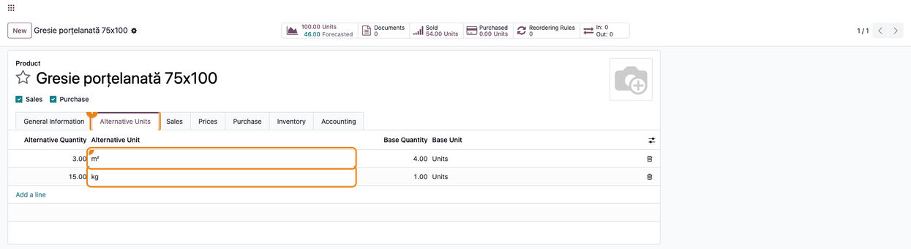
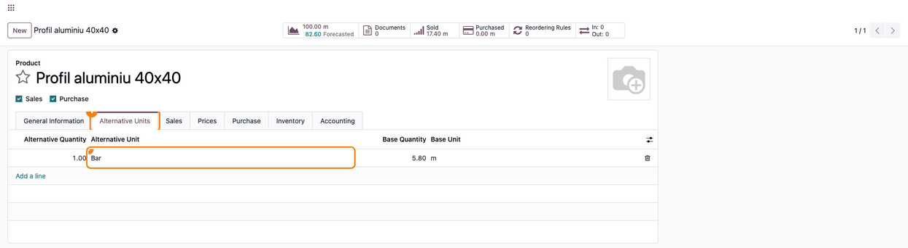
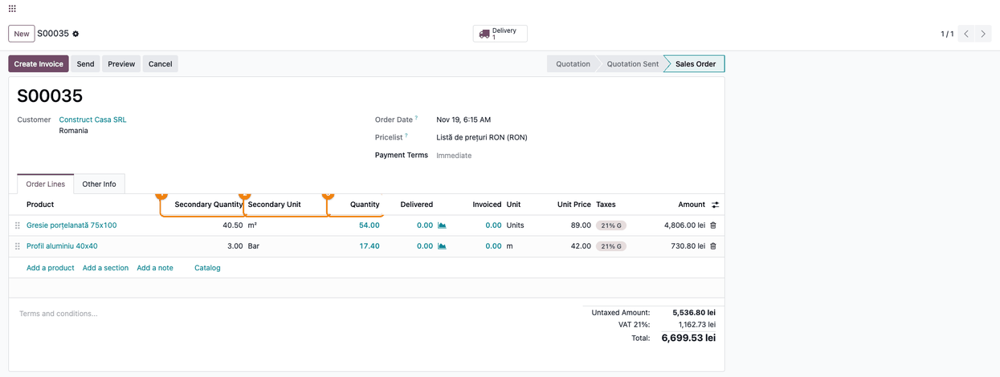
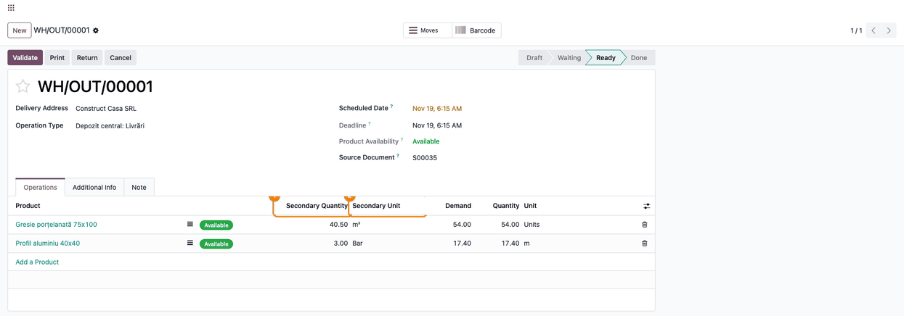
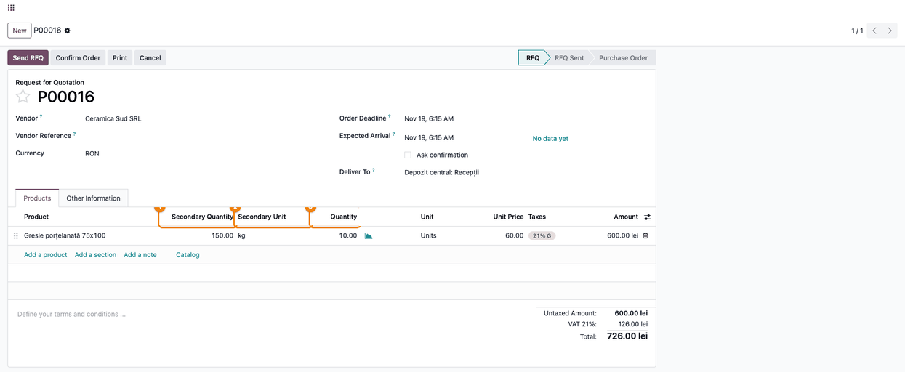

Product Secondary UoM
Per-product unit conversions
Odoo 19.0
Inventory/Inventory
Odoo.sh • On-premise
OPL-1
✓ 23 automated tests
91% code coverage
Per-product unit conversions
This module adds product specific conversion factors between units of measure, following the SAP material master (MARM) pattern.
In standard Odoo 19 the conversion factor belongs to the unit of measure itself, so "1 box = 12 units" is global. With this module the factor is defined per product, on the Alternative Units tab of the product form:
3 m² = 4 Units — each piece covers 0.75 m²1 kg = 2 Units — each piece weighs 0.5 kgThe stock is always kept in the product base unit. On sale order lines, purchase order lines and stock moves the user can enter the quantity in an alternative unit (kg, m², ...) and the line quantity is computed automatically — and vice versa: changing the line quantity updates the secondary quantity.
The price always stays in the base unit: the secondary quantity is only an input/information helper, it never affects pricing, invoicing or stock valuation.
Unlike creating dedicated UoM records per product, this approach keeps the
global UoM table clean and does not affect standard reports, stock valuation
or any code reading uom.factor directly in SQL.
Open the product (Inventory → Products → Products) and go to the Alternative Units tab. Each line says how many alternative units correspond to how many base units, for example 3 m² = 4 Units for a tile kept in pieces, or 15 kg = 1 Units. The Base Unit column is the product unit, filled in automatically. A product has at most one conversion per alternative unit, and the alternative unit must differ from the base unit.

A product kept in a continuous unit works the same way: an aluminium profile kept in m has the line 1 Bar = 5.8 m. A unit that does not exist yet (such as Bar) is created first in Inventory → Configuration → Products → Units & Packagings. A counting unit that will be the base unit of products (Bag, Roll, Box) must be created with the Units reference, otherwise it is treated as a continuous unit and quantities are not rounded up to whole pieces.

On a quotation (Sales → Orders → Quotations), show the Secondary Quantity and Secondary Unit columns from the optional columns menu of the order lines (they are hidden by default). On each line, choose the Secondary Unit among the product conversions, type the Secondary Quantity and save: the line Quantity is computed in the base unit when the order is saved.
The unit price and the amounts stay in the base unit.

The secondary unit follows the order on the delivery or the receipt. On the Operations tab of the transfer, the same two optional columns show the secondary quantity computed from the move quantity.

Purchase order lines work the same way: 150 kg of tiles give 10.00 Units.

static/description/en/demo.gif), the language of the Apps Store page; the Romanian copy is removed.Our 600+ apps on the Odoo Apps Store are used in Odoo implementations across Europe, the Americas, Asia and Africa — by companies we have never even met. That is the advantage of building modules that simply work.
Questions about this module, or need it adapted to your processes? Write to us — the developers who build it will answer.
Terrabit support →Other modules from the same publisher, built to work together. All apps →